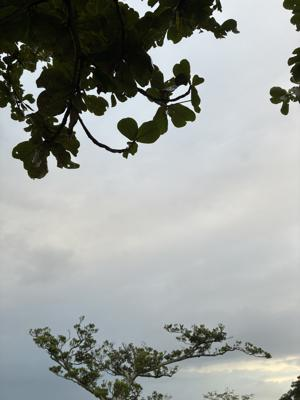
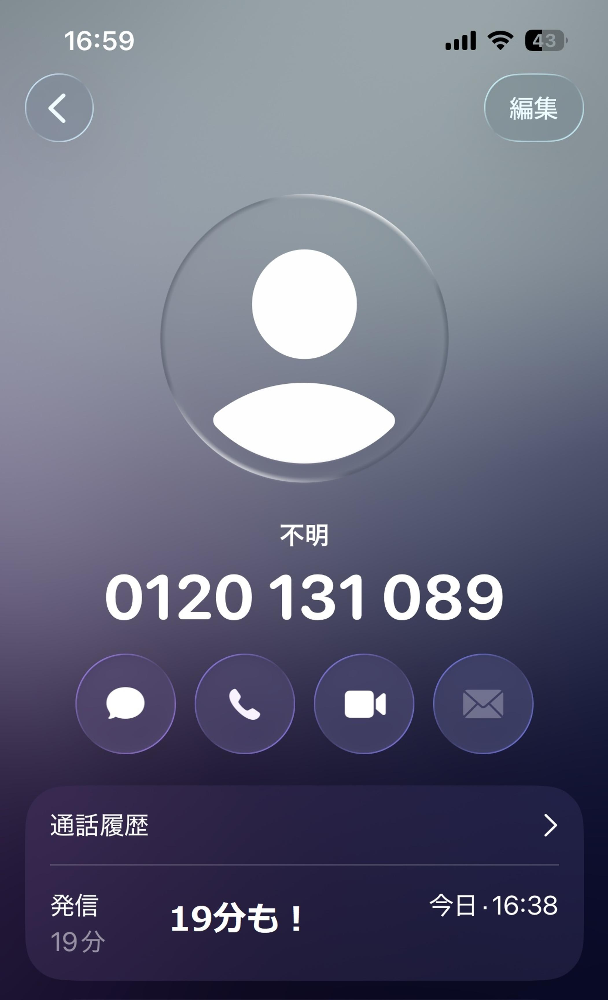

うるがいの話 ある日
最新: イオンのカード【うるがいの話 ある日】とは 一日だけのプログです
『うるがいの話』の最新一日だけのプログで、通信料が少なく経済的だ。カニの画像をクリックすると全ての日付が載る『うるがいの話』サイトを表示します
|
|
【うるがいの話】 うるがい(ｳﾙｶﾞｲ urugai)とは、『もずくがに』の名前でとても大きくなります。 |
|---|---|
|
|
【カミマヤーの話】 猫のことを方言でマヤーといいます。カミマヤー（kamimayaa）とは、神の猫のことです。 |
|
【たながぁの音楽】 たながぁ（ﾀﾅｶﾞｰ tanagaa）とは手長えびのことで、何種類かあり大きいのは車 エビぐらいになります。 |

|
【ぶながぁの話】 ぶながぁ(ﾌﾞﾅｶﾞｰ bunagaa)とは、赤い髪の毛、赤い身体、そして身長は１ｍ２０ｃｍ ぐらい、川の蟹を食べているの目撃された。場所は沖縄県国頭郡大宜味村のと ある村僕の隣近所に住んでいる爺さんから、聞いた話です。 |
|
|
【ギーマの話】 ギーマ(giima)とは、山原の里山に咲くスズランに似た、 花を付けます。実は食べられます、 気が付くと口の周りが紫になっています。 |
2026年11月06日 (金）イオンのカード
15:53

他社同様、固定電話でも認証手続きが行えるように改善してく
ださい、とコーラに伝え電話を終える。
お客さまに適正なご利用枠の提供、および適切な情報をお届け
するために「公式サイト」にてご登録内容(年収、お勤め先、
住所、電話番号など)のご確認をお願いします。
イオンから度々メールが来る、登録されている顧客情報は退職
前である。訂正しなければと、幾度か挑戦したが複雑で放置し
ていたものの、さすがにと気合をいれ変更手続きをすることに
、頑張りましたよ。約３０分ほどかかりました、
１回目：イオン銀行コールセンターフリーダイヤル
あや、ややこしいと２分で切る、仕方ない有料版で
２回目：携帯ナビダイヤル（有料）にかけた
ん？、１回目と同じジャン、お金がもったいないと２分で切る
３回目：イオン銀行コールセンターフリーダイヤル
ただいま大変込み合ったます、次の電話でも対応できます

固定電話では 0120-22-3213
携帯ナビダイヤル 0570-065-750
（ちなみに、上の電話番号はウェブサイトではさがせません）
これを、３回ほど繰り返す、途中、エアイに電話の要件を口頭
で話、エアイが●●ですね、ハイかイイエと答えてください、
『ハイ』（ン？、ブッシュボタンでないのかい）、かなりムカ
つく。
１５分程で、やっと女性のコーラにつながる、本人確認をする
名前、生年月日、住所、口座情報、え！、口座情報待っていな
い、通帳を探し口座情報を回答する。で、登録情報が固定電話
なので、認証手続きのため携帯電話に変えたいのですと、なお
マイナンバーカードでの認証手続きも挑戦しましたが、複雑で
出来ませんでした。『では、こちらで変更します』、ついでに
無職ですので、年収などの変更をお願いする。２０分です！。
ヨメにこの話をすると、イオンのカード解約しようかと言った
。